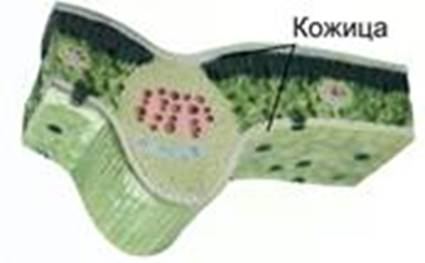
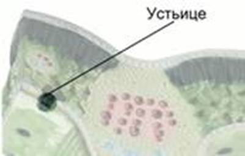
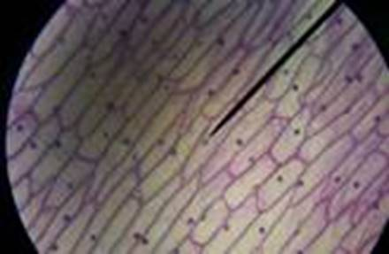
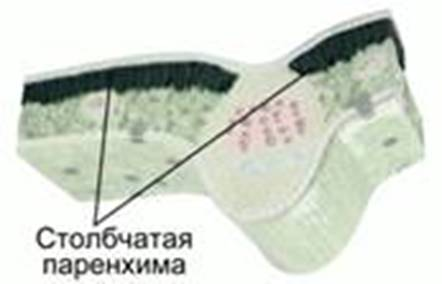
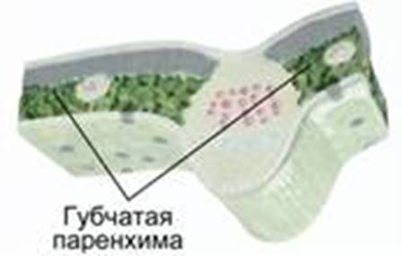
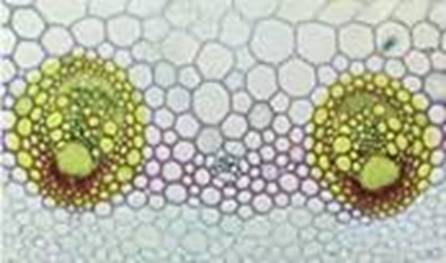
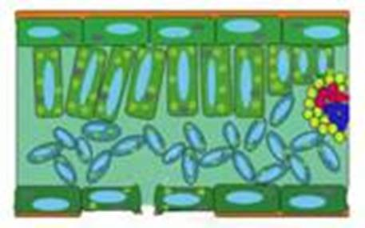

Фотосинтез – процесс образования органических веществ из углекислого газа и воды на свету при участии фотосинтетических пигментов (хлорофилл у растений, бактериохлорофилл и бактериородопсин у бактерий).
Строение листа тесно связано с его функционированием. Лист состоит из 3 слоев
Сверху и снизу лист покрыт прозрачной кожицей (см. Рис. 1), которая предохраняет его от повреждения и высыхания.

Рис. 1. Кожица листа
Кожица (эпидерма) – один из видов покровной ткани растения. Обычно состоит из 1 слоя клеток. Ее клетки выделяют воскоподобную кутикулу, которая покрывает поверхность листа, защищает лист от испарения воды (транспирации).
Среди клеток кожицы содержатся замыкающие клетки, в цитоплазме которых содержатся хлоропласты. Между клетками находится щель. Эти образования называются устьицами (см. Рис. 2).

Рис. 2. Устьице
Устьица выполняют функции газообмена и испарения воды. Устьичные клетки способны замыкаться, препятствуя излишнему испарению воды. Движения устьичных клеток зависят от обеспеченности растения водой, освещенности, температуры.
Пластиды – это мембранные органоиды, встречающиеся у фотосинтезирующих эукариотических организмов (высшие растения, низшие водоросли, некоторые одноклеточные организмы). Пластиды окружены двумя мембранами, в их матриксе имеется собственная геномная система, функции пластид связаны с энергообеспечением клетки, идущим на нужды фотосинтеза.
Устьицы в основном расположены на внутренней стороне листа. У плавающих листьев водных растений устьица расположены только на верхней стороне листа. Подводные листья водных растений устьиц не имеют.
Нижний слой эпидермиса часто имеет волоски, которые уменьшают перегревание растения и уменьшают степень транспирации.
На 1 мм2 листовой поверхности устьиц от 50 до 500 штук.
Строение кожицы листа
Возьмите лист герани. Надломите его и препаровальной иглой снимите кусочек кожицы. Приготовьте препарат, рассмотрите его под микроскопом (см. Рис. 3).

Рис. 3. Препарат кожицы листа герани
Найдите бесцветные клетки, опишите их. Найдите устьичные клетки, укажите их отличие от остальных клеток кожицы листа. Зарисуйте кожицу листа, сделайте подписи.
Паренхима – мякоть листа, состоит из клеток основной ткани.
Вверху расположена столбчатая паренхима (см. Рис. 4), образованная клетками столбовидной формы. Имеют много хлоропластов, основные фотосинтезирующие клетки листа.

Рис. 4. Клетки столбчатой паренхимы
Ниже расположена губчатая паренхима (см. Рис. 5). Состоит из неправильной формы клеток, неплотно прилегающих друг к другу. Мало хлоропластов. Межклетники заполнены воздухом. Клетки губчатой паренхимы осуществляют интенсивный эффективный газообмен.

Рис. 5. Клетки губчатой паренхимы
Газообмен в биологии – поглощение и выделение газа, особенно кислорода и углекислого газа, у живых организмов. Предполагает вдыхание кислорода и выдыхание углекислого газа. У растений, водорослей и бактерий, которые осуществляют фотосинтез, может происходить противоположный процесс, когда углекислый газ вдыхается, а чистый кислород выдыхается.
Жилки (см. Рис 6) – проводящие пучки листа. Состоят из сосудов, ситовидных трубок и волокон.
Волокна – сильно вытянутые клетки с толстыми стенками. Придают листу прочность.
По сосудам осуществляется транспорт минеральных веществ из корней в листья. Они состоят из омертвевших клеток.
Ситовидные трубки состоят из живых клеток, по которым из листьев передвигаются растворы органических веществ.

Рис. 6. Жилки листа, микропрепарат
Клеточное строение листа
Изучите готовые микропрепараты поперечного среза листа. Рассмотрите клетки кожицы листа, найдите устьица. Рассмотрите клетки паренхимы листа. Опишите их расположение, форму. Рассмотрите межклетники, вспомните их назначение. Найдите проводящие пучки листа, укажите образующие их клетки, их функции. Сравните вид микропрепарата с рисунком (см. Рис. 7).

Рис. 7. Схема клеточного строения листа
Зарисуйте поперечный срез листа, подпишите все его части и типы клеток.
Эксперимент
Поместите 2 луковицы в банки с водой так, чтобы она касалась их основания. Поставьте банки в прохладное место. Одну банку поставьте в освещенное место, а другую – в темное. Следите за развитием листьев на луковицах. Чем оно отличается? Почему?
Список литературы
1. Биология. Бактерии, грибы, растения. 6 кл.: учеб. для общеобразоват. учреждений / В.В. Пасечник. – 14-е изд., стереотип. – М.: Дрофа, 2011. – 304 с.: ил.
2. Тихонова Е.Т., Романова Н.И. Биология, 6. – М.: Русское слово.
3. Исаева Т.А., Романова Н.И. Биология, 6. – М.: Русское слово.
Дополнительные рекомендованные ссылки на ресурсы сети Интернет
1. Biolicey2vrn.ucoz.ru (Источник).
2. Engschool18.ru (Источник).
3. Kaz-ekzams.ru (Источник).
Домашнее задание
1. Биология. Бактерии, грибы, растения. 6 кл.: учеб. для общеобразоват. учреждений / В.В. Пасечник. – 14-е изд., стереотип. – М.: Дрофа, 2011. – 304 с.: ил. – с. 119, задания и вопросы 2, 5 (Источник).
2. Как функционируют устьичные клетки? Какова их функция?
3. Как устроены жилки листа?
4. * Представьте, что у листьев вдруг исчезли клетки кожицы. Что с ними произойдет?